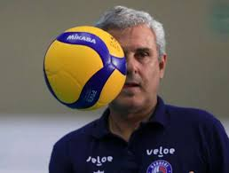

O volei
Vôlei, um esporte veloz, repleto de estratégias inimagináveis desde o começo de cada saque ao fim de algum corte, sem dúvidas, um esporte no qual se é preciso uma velocidade de raciocínio e trabalho em equipe sem fins. Um esporte que atualmente, pelo menos no Brasil, é referência mundial, tanto no feminino quanto no masculino, onde o vôlei feminino detém 5 medalhas de ouro olímpicas e o masculino 3. Um esporte com essa magnitude e importância nacional merece, com certeza, sua atenção e informação, e é aqui que você encontrará tudo isso.
Regras do volei
Cada time é composto por 6 jogadores em quadra e 6 jogadores reserva. Após o saque, cada time só poderá tocar a bola três vezes, sendo proibido que um jogador toque a bola duas vezes seguidas. A equipe vencedora é aquela que ganhar o maior número de sets.
O que é arbitragem no vôlei?
No voleibol, a equipe de arbitragem é formada pelos árbitros, juízes de linha e apontadores. O primeiro árbitro é quem dirige a partida, comanda toda a equipe de arbitragem e ocupa a cadeira do árbitro. O segundo árbitro atua de pé, no lado oposto ao do primeiro árbitro.
Classificação
| Tabela Liga das Nações de Voleibol Masculino | ||
|---|---|---|
| Posição | Seleção | Pontos |
| 1 | Estados Unidos | 31 |
| 2 | Japão | 27 |
| 3 | Polônia | 26 |
| 4 | Itália | 26 |
| 5 | Argentina | 25 |
| 6 | Brasil | 25 |
| 7 | Eslovênia | 25 |
| 8 | França | 18 |
| 9 | Sérvia | 17 |
| 10 | Holanda | 16 |
Principais notícias do momento
Darlan revela sonhos de ganhar Olimpíada, de formar uma família e lembra início no vôlei: "Era uma criança antissocial" Criado há 15 anos, projeto social de Petrolina leva o vôlei para escolas públicas do município Guerra em Israel: atletas brasileiras embarcam em voo da FAB em Tel Aviv